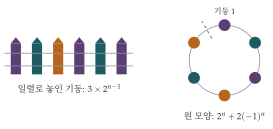

STEP II 1995, 문제 2
계속 읽기 전에 문제를 먼저 읽어 보자. 문제는 STEP Support Programme의 문제 데이터베이스에 있다: step.maths.org/questions/95-s2-q2
도입
일렬로 늘어선 기둥을 칠하는 것은 쉽다. 첫 번째 기둥은 \(3\)가지, 나머지 기둥은 각각 \(2\)가지(바로 앞 기둥의 색만 아니면 된다)를 고를 수 있으므로 \(3 \times 2^{n-1}\)가지이다. 그런데 이 줄을 구부려 원으로 만들면 문제는 뜻밖에 까다로워진다. 이제 마지막 기둥은 이웃한 기둥뿐 아니라 첫 번째 기둥과도 색이 달라야 하는데, 이 조건 때문에 배제되는 색이 하나인지 없는지는 앞에서 일어난 모든 일에 따라 달라지기 때문이다.
이 문제는 고전적인 기법으로 이 어려움을 피해 간다. 마지막 기둥의 색에 따라 경우를 나누어 세고, 각 경우가 서로 어떻게 이어지는지 찾는 것이다. 답 \(2^n + 2(-1)^n\)은 채색 다항식(chromatic polynomial)의 첫 번째 예로, 4색 정리(four colour theorem)의 바탕에 있는 수학의 일부이다.
시작하기 전에
원 모양으로 놓인 기둥 \(3\)개와 \(4\)개를 칠하는 방법의 수를 세어 보아라. \(3 \times 2^{n-1}\)은 실제보다 많이 세는가? 그렇다면 얼마나 많이 세는가?
원 모양으로 놓인 기둥 세 개는 모두 서로 이웃하므로 세 가지 색을 모두 다르게 써야 한다. 따라서 \(3! = 6\)가지이다. 원 모양으로 놓인 기둥 네 개는 \(18\)가지이다(마지막에 확인할 수 있다). 일렬로 놓인 경우의 \(3 \times 2^2 = 12\), \(3 \times 2^3 = 24\)와 비교해 보라. 원에서는 마지막 기둥이 첫 번째 기둥과 같은 색인 칠하기가 빠진다.
차근차근 풀기
단계 1 두 종류의 칠하기
기둥 \(n + 1\)개를 첫 번째와 마지막 기둥이 빨간색이 되도록 칠한 것을 하나 생각하자. 마지막 기둥을 없애면, 남은 처음 \(n\)개 기둥의 칠하기에 대해 무엇을 말할 수 있는가?
기둥 \(n\)은 빨간색인 기둥 \(n + 1\)과 이웃하므로, 기둥 \(n\)은 빨간색이 아니다. 기둥 \(n + 1\)을 없애면 첫 번째 기둥은 빨간색이고 마지막 기둥은 빨간색이 아닌 \(n\)개 기둥의 칠하기, 곧 \(s_n\)가지 칠하기 중 하나가 남는다. 거꾸로, \(s_n\)가지 칠하기 중 어느 것이든 기둥 \(n + 1\)을 빨간색으로 칠하는 단 한 가지 방법으로 확장할 수 있다. 따라서 두 집합은 정확히 일대일로 대응하고, \(r_{n+1} = s_n\)이다.
\(r_n + s_n\)은 무엇인가?
첫 번째 기둥이 빨간색인 칠하기에서 마지막 기둥은 빨간색이거나 빨간색이 아니므로, \(r_n + s_n\)은 첫 번째 기둥이 빨간색인 \(n\)개 기둥의 칠하기 전체의 수이다. 첫 번째 기둥 다음의 각 기둥은 \(2\)가지씩 고를 수 있으므로 \(r_n + s_n = 2^{n-1}\)이다. 따라서 \[r_{n+1} + r_n = s_n + r_n = 2^{n-1}. \qed\]
단계 2 귀납법으로 구하는 공식
\(n = 1\)이면 기둥이 하나이고 빨간색으로 칠하므로 \(r_1 = 1\)이며, 공식도 \(\frac13(1 + 2) = 1\)을 준다. 공식이 \(r_n\)에 대해 성립한다고 가정하자. 그러면 \[r_{n+1} = 2^{n-1} - r_n = 2^{n-1} - \frac{2^{n-1} + 2(-1)^{n-1}}{3} = \frac{2 \cdot 2^{n-1} - 2(-1)^{n-1}}{3} = \frac{2^n + 2(-1)^n}{3},\] 이고, 이것은 \(r_{n+1}\)에 대한 공식이다. 따라서 수학적 귀납법(induction)에 의해 공식이 성립한다.■
이 공식은 어디에서 나왔을까? 점화식(recurrence) \(r_{n+1} + r_n = 2^{n-1}\)은 미분방정식(differential equation)과 비슷하다. 즉 “특수해(particular solution)” \(c \cdot 2^n\)에 \(r_{n+1} + r_n = 0\)을 만족하는 “여함수(complementary function)” \(A(-1)^n\)을 더한 꼴이다. \(c\)와 \(A\)를 구하여라.
단계 3 원
\(n\)개의 기둥이 놓인 원에서 기둥 \(1\)의 색을 빨간색으로 고정하자. 이제 기둥 \(n\)과 기둥 \(1\) 사이에서 원을 끊어 일직선으로 펴자. 일렬로 놓인 기둥의 칠하기 중 어느 것이 올바른 원의 칠하기에 대응하는가?
원을 펴면 빨간색으로 시작하는 \(n\)개 기둥의 줄이 되는데, 이때 마지막 기둥은 기둥 \(1\)과도 색이 달라야 한다. 즉 마지막 기둥은 빨간색이 아니다. 이것이 바로 \(s_n\)가지 칠하기이다. 기둥 \(1\)은 \(3\)가지 색 중 어느 것이든 될 수 있으므로, 원의 칠하기의 수는 \[3s_n = 3(2^{n-1} - r_n) = 3 \cdot 2^{n-1} - 2^{n-1} - 2(-1)^{n-1} = 2^n + 2(-1)^n. \qed\] 검산: \(n = 3\)이면 \(8 - 2 = 6\)이고, \(n = 4\)이면 \(16 + 2 = 18\)이다.

돌아보기
서로 이어지는 경우로 나누기. 마지막 기둥이 빨간색인지를 기록하자 두 수열 \(r_n\)과 \(s_n\)이 생겼고, 이들은 간단한 점화식으로 연결되었다.
전단사(bijection). \(r_{n+1} = s_n\)은 계산이 아니라 칠하기를 일대일로 짝지어 증명하였다.
원을 끊기. 원형 문제가 양 끝에 조건이 붙은 일렬 문제로 바뀌었다.
숨은 수학
채색 다항식
기둥과 그 이웃 관계는 그래프(graph)를 이룬다. 일렬로 놓인 경우는 경로(path), 원 모양인 경우는 사이클(cycle)이다. 적절한 색칠(proper colouring)이란 이웃한 꼭짓점에 서로 다른 색을 칠하는 것이다. \(k\)가지 색으로 하는 적절한 색칠의 수는 \(k\)에 대한 다항식이며, 이를 그래프의 채색 다항식이라 한다. 이 개념은 1912년 조지 버코프(George Birkhoff)가 도입하였다. 문제의 논증을 \(k\)가지 색으로 반복하면 \[\text{경로: } k(k - 1)^{n-1}, \qquad \text{사이클: } (k - 1)^n + (-1)^n(k - 1).\] 을 얻는다. \(k = 3\)이면 사이클의 공식은 \(2^n + 2(-1)^n\)이다. 버코프는 모든 지도의 그래프의 채색 다항식이 \(k = 4\)에서 양수임을 보여 4색 정리(모든 지도는 이웃한 나라끼리 색이 다르도록 네 가지 색으로 칠할 수 있다)를 증명하고자 했다. 이 접근법은 끝내 성공하지 못했고, 4색 정리는 1976년에 케네스 아펠(Kenneth Appel)과 볼프강 하켄(Wolfgang Haken)이 컴퓨터의 대대적인 도움을 받아 마침내 증명하였다. 채색 다항식은 지금도 활발한 연구 분야이며, 통계물리학과 놀라운 연관이 있는데, 그곳에서는 자성에 관한 포츠 모형(Potts model)으로 나타난다.
행렬로 같은 수 세기
7장의 선형대수를 이용하여 답을 보는 다른 방법도 있다. \(\mathbf{M}\)을 대각성분이 \(0\)이고 나머지 성분이 \(1\)인 \(3 \times 3\) 행렬이라 하자. 즉 색 \(j\)가 색 \(i\) 다음에 올 수 있을 때 \((i, j)\) 성분이 \(1\)이다. 그러면 \(\mathbf{M}^{n-1}\)의 \((i, j)\) 성분은 색 \(i\)로 시작하여 색 \(j\)로 끝나는 일렬 칠하기의 수이므로, \(r_n\)은 \(\mathbf{M}^{n-1}\)의 대각성분이다. 원의 칠하기는 \(n\)걸음 후에 출발점으로 돌아오는 수열이므로, 원의 칠하기의 수는 \(\mathbf{M}^n\)의 대각합(trace)이다. 모든 성분이 \(1\)인 행렬 \(\mathbf{J}\)에 대해 \(\mathbf{M} = \mathbf{J} - \mathbf{I}\)이므로, \(\mathbf{M}\)의 고유값(eigenvalue)은 \(3 - 1 = 2\)(고유벡터(eigenvector) \((1, 1, 1)\))와 \(-1\)(중복도 2)이고, \(\mathbf{M}^n\)의 대각합은 고유값의 \(n\)제곱의 합이다. \[\operatorname{tr}\mathbf{M}^n = 2^n + (-1)^n + (-1)^n = 2^n + 2(-1)^n.\] 이 전달 행렬(transfer matrix) 방법은 한 단계씩 쌓아 올리는 배열의 수를 세는 데 조합론과 통계물리학 전반에서 쓰인다.
사고 기술
하나의 수열만으로는 간단한 점화식을 만족하지 않을 때, 약간의 추가 정보(여기서는 마지막 기둥의 색)를 기록하고 각 경우를 연결하는 점화식을 찾는다.
이것이 상태(state)라는 개념이다. 다음 단계로 나아가는 데 꼭 필요한 정보만, 그 이상은 아무것도 기록하지 않는 것이다. 이는 컴퓨터 과학의 동적 계획법(dynamic programming), 확률론의 마르코프 연쇄(Markov chain)(12.16 절), 그리고 전달 행렬 방법의 기초이다.
더 도전하기
\(k\)가지 색. \(k\)가지 색으로 문제를 반복하여라. \(r_{n+1} = s_n\)이 여전히 성립하고 \(r_{n+1} + r_n = (k-1)^{n-1}\)임을 보이고, \(r_n\)을 구한 다음, 사이클의 채색 다항식 \((k - 1)^n + (-1)^n(k - 1)\)을 이끌어 내어라.
빨간색끼리 이웃하지 않기. 일렬로 놓인 \(n\)개의 기둥을 이웃한 두 기둥이 모두 빨간색이 되는 일이 없도록 빨간색 또는 흰색으로 칠하는 방법은 몇 가지인가? (피보나치 수(Fibonacci numbers)가 나올 것이다.)
바퀴. 원의 모든 기둥과 이웃하는 가운데 기둥을 하나 더하자(“바퀴(wheel)”). 이것을 \(4\)가지 색으로 칠하는 방법은 몇 가지인가? (힌트: 가운데 기둥이 한 가지 색을 쓰고, 원은 나머지 세 가지 색을 써야 한다.)
목걸이. 원의 두 칠하기 중 하나가 다른 하나를 회전한 것일 때 같은 것으로 본다면, \(n = 4\)일 때 서로 다른 칠하기는 몇 가지인가? \(n = 5\)일 때는? (이것이 번사이드 보조정리(Burnside’s lemma)의 출발점이다.)
더 읽을거리
Robin Wilson, Introduction to Graph Theory (Pearson). 그래프 이론 입문. 표준적인 첫 강의 교재로, 색칠과 4색 문제를 다룬다.
Robin Wilson, Four Colours Suffice (Penguin). 네 가지 색이면 충분하다. 일반 독자를 위한 4색 정리 이야기이다.
Herbert Wilf, generatingfunctionology (온라인 무료 공개). 생성함수론. 점화식과 그 풀이 방법을 다루며, 전달 행렬 방법도 포함한다.